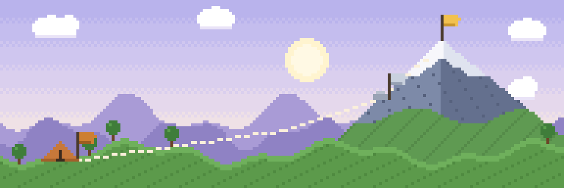

第一学期 · 第 6 周 · 数字基本功 B5Semester 1 · Week 6 · Digital Basics B5
检索、保存与引用Search, Save & Cite
这周，你学会把互联网当图书馆用：找得到、存得住、记得清。This week the internet starts working like your library: find it, keep it, record it.
进度来自你在每一关勾选的清单，只保存在这个浏览器里。它不是你的分数——分数由导师按量规给。Progress comes from the checklists you tick on each tier's page, saved only in this browser. It is not your score — your mentor scores with the rubric.
这周要做什么？三关，一关一关来What do I need to do? Three tiers, one at a time
起点营地是每个人都要完成的，做完就拿到本单元的及格分。还有力气，就继续往上爬。Everyone completes Base Camp — that alone earns this module's pass mark. Energy left? Keep climbing.
第 1 关 · 必做Tier 1 · everyone
起点营地Base Camp
- 学 3 段微课：选词 · 收藏 · 三行来源卡3 micro-lessons: words · saving · the three-line card
- 为自己的问题找 3 个来源，各写一张三行卡3 sources for your own question, one three-line card each
- 逛外部课程菜单，记下最想试的 2 门和理由Browse the external course menu; name the 2 you'd try, and why
- 发布"检索报告"，登记链接，写日志Publish the "search report", register it, write your log
第 2 关 · 挑战Tier 2 · challenge
山脊Ridge Trail
- 再学 1 段微课：收紧渔网（引号、site:）1 more micro-lesson: narrow the net (quotes, site:)
- 给每张卡加一句"第一眼可信吗？因为——"Add "trustworthy at first glance? because —" to each card
- 试学一门外部课程约 15 分钟，写两行小记Sample one external course for ~15 min; two lines of notes
🔒 先完成起点营地的清单再来——不过随时可以先看看。🔒 Finish Base Camp's checklist first — though you may peek anytime.
上山脊 →To the ridge →第 3 关 · 高手Tier 3 · expert
登顶Summit
- 换一种语言（中↔英）把问题再搜一次Search your question again in your other language (Chinese ↔ English)
- 加一张新语言的来源卡（第 4 张）Add a fourth card, from a source in that language
- 写一句：两种语言的互联网，给了你什么不同？One sentence: what did the two internets give you differently?
🔒 先完成山脊的清单再来——不过随时可以先看看。🔒 Finish the Ridge checklist first — though you may peek anytime.
冲顶 →Go for the top →三关怎么玩How the tiers work
- ⛺ 起点营地 = 及格线⛺ Base Camp = the pass mark第 1 关做到位，导师给满 3 分（本单元 5 分里的及格线）。停在营地不是失败。Do Tier 1 well and your mentor awards its full 3 of the module's 5 points — the pass mark. Stopping at camp is not failing.
- 🧭 一关接一关🧭 One tier after another导师按顺序计分：起点营地至少 2 分，才给山脊计分；山脊至少 1 分，才给登顶计分。Your mentor scores in order: the Ridge counts once Base Camp has at least 2 points; the Summit once the Ridge has at least 1.
- 📄 一份报告，越写越长📄 One report that grows三关都写在同一页"检索报告"上。往上爬时更新这一页，再给导师发一句"已更新"的邮件。All three tiers go on one "search report" page. Climbing means updating that page, then emailing your mentor a one-line "updated" note.
- 🏅 徽章🏅 Badges每关的清单全部勾完，就点亮这一关的徽章（只在你的浏览器里）。徽章说明"准备好了"，分数由导师给。Tick every item on a tier's checklist and its badge lights up (in your browser only). A badge means "ready for review"; your mentor gives the points.
本周不用生成式 AI。搜索结果页顶端的"智能摘要"不能当来源——来源必须是一个能追到的真实页面。搜索框也是输入框：真名、学校、住址不当关键词。No generative AI this week. The "smart summary" atop a results page cannot be a source — a source is a real page you can trace. The search box is an input box too: real names, school and address are not keywords.
随时可用Always here
遇到问题：先看每关页面底部的常见问题；还不清楚，就邮件导师，附一张截图（个人信息先打码）。Stuck? Check the FAQ at the foot of each tier's page; still unclear, email your mentor with a screenshot (private details masked).